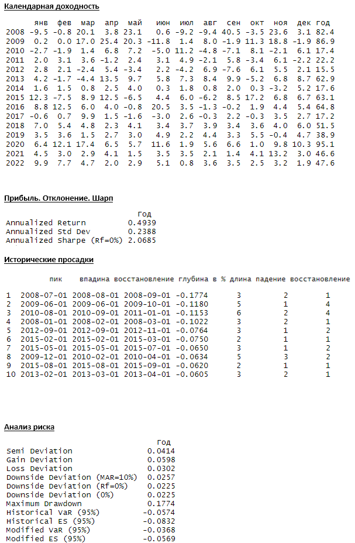

Что такое AM ?
Доверительное управление (англ. asset management) - при котором инвестор передает денежные средства управляющей компании для инвестирования в ценные бумаги и другие активы на определенный срок с целью потенциального получения прибыли. Управляющая компания получает право совершать с активами любые действия в интересах инвестора, не противоречащие закону и подписанному договору.
Владельцам частных капиталов и семейных офисов мы предлагаем инвестиционные решения на базе алгоритмического фонда.
Результаты
Наши стратегии реализованы в наиболее ликвидном формате — индивидуально управляемых счетах (separated managed accounts, SMA) в ведущих российских банках.

Характеристика
Cтратегии направлены на решение одной из двух задач: повышении доходности инвестиционного портфеля при заданном уровне риска или уменьшении волатильности портфеля при сохранении целевой доходности.
Стратегия предполагает инвестирование в инструменты фондового и срочного рынка, обращающиеся на Московской бирже, и номинированные в рублях.
Принципы управления
Портфель не имеет предпочтений для «длинной» или «короткой» стороны: большая часть алгоритмов может торговать симметрично.
Методология
Портфель состоит из широкого множества некоррелированных и, преимущественно, краткосрочных алгоритмов , торгующих на разных инструментах. Основная часть алгоритмов портфеля может быть классифицирована как краткосрочные и среднесрочные паттерновые системы. Аллокация для различных систем регулярно пересматривается и может изменяться.
Описание
Средняя историческая доходность — от 30% годовых.
Допустимый риск портфеля — 15%.
Инвестиционный горизонт — 1 год.
Инвестиционный профиль: Сбалансированный.
Условия работы
Минимальная сумма для инвестиций – 5 млн. рублей
Отчетный период – календарный квартал.
Вознаграждение
High Watermark — Да
Плата за успех — 20 %
Безопасность
В целях безопасности наши сервера расположены в Москве, в ЦОД DataSpace – объекте премиум класса, с сертификатами TIER III. Такое размещение позволяет минимизировать технологические риски и убытки, связанные с отключением электричества, интернета, поломкой компьютерного оборудования, неустойчивой работы терминалов и бирж.
Услуги прямого подключения (DMA) в рамках ultra low-latency решений к бирже оплачивает инвестор.
Юридически оформляется договор услуг, со всеми приложениями.
Гарантии и дополнительные условия
Обсуждаются индивидуально
Последовательность шагов
Для начала работы инвестору необходимо определить для себя критический уровень риска или долю капитала, которую инвестор готов потерять. Рекомендуемое значение от 10 до 15% от первоначального капитала.
Открыть брокерский счет с доступом ко всем возможным площадкам, в любом банке/инвестиционной компании. Оплатить доступ к DMA.
Пополнить брокерский счет денежными средствами.
Подписать договор управления, и передать техническую информацию.
Получать, и подписывать отчеты.
По окончании срока договора выплатить вознаграждение управляющему и заплатить налог с прибыли.
Вывести прибыль/ довнести деньги на счет.